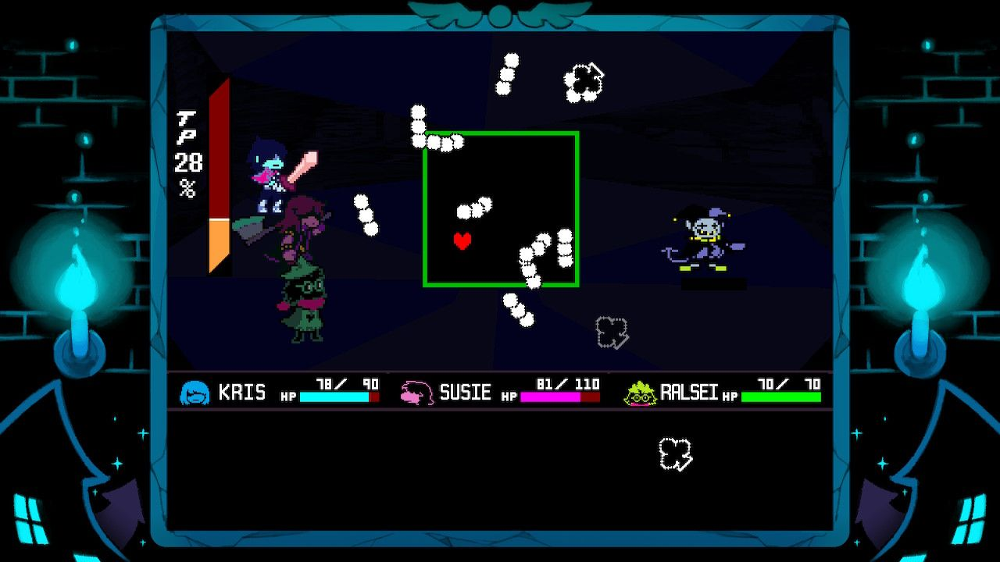
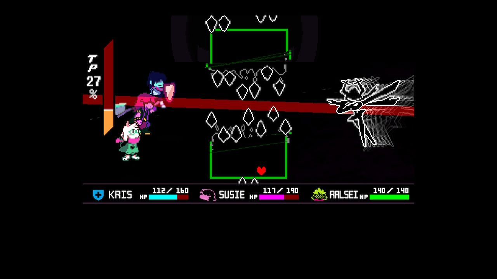
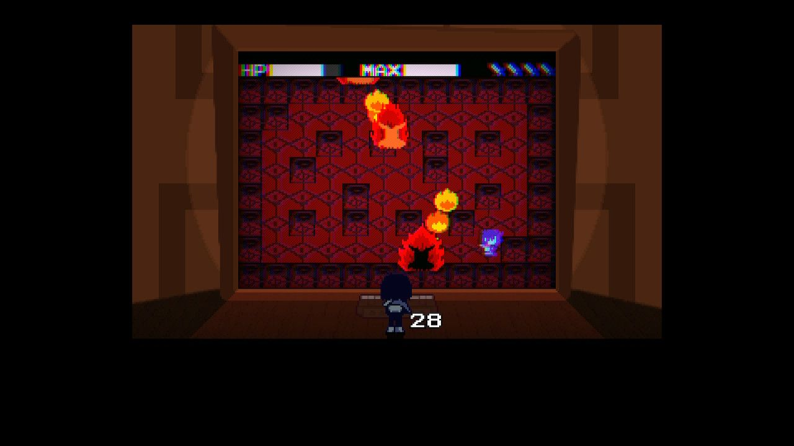
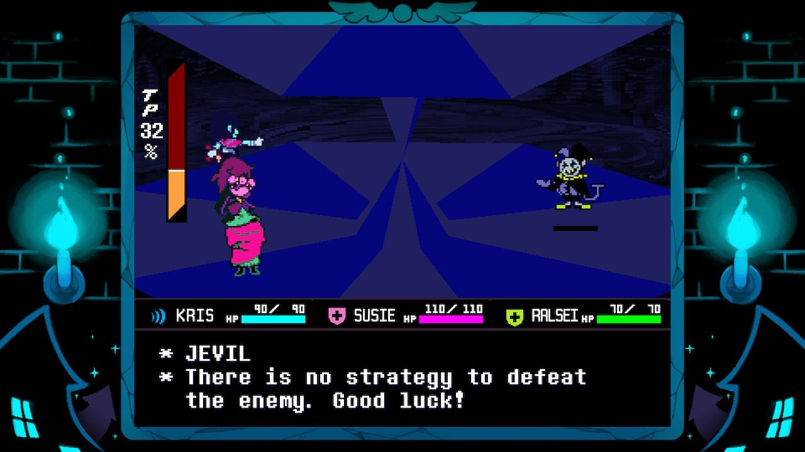
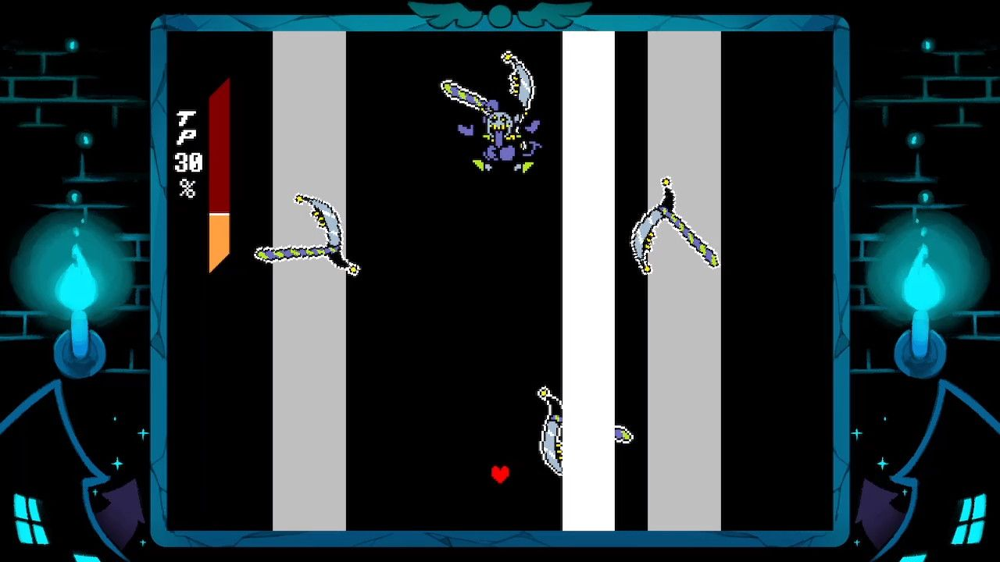
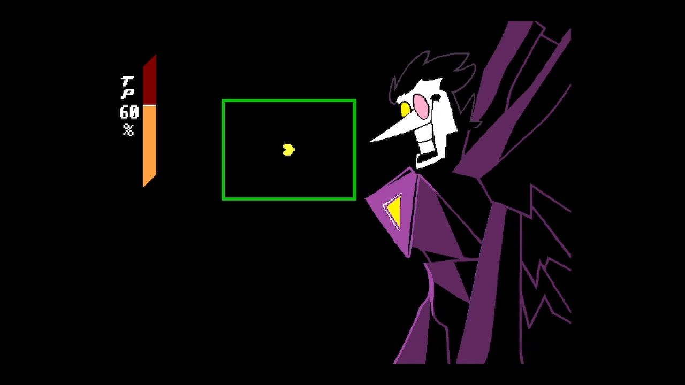
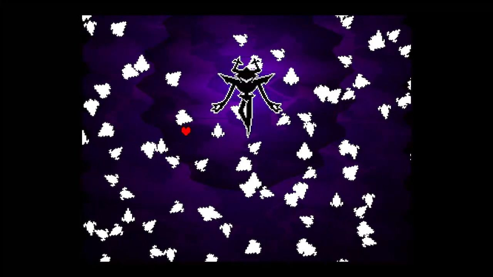

I have really enjoyed playing Deltarune ever since stumbling across it in 2019 on the Nintendo Switch, keeping up with it ever since. Due to my love of this game, I wanted to rank the crystal bosses based on their difficulty and my personal enjoyment of the fights by analyzing and discussing their mechanics. I have replayed all fights on Nintendo Switch in order to give them a fair baseline for comparison. However, I will not be discussing the Mike or Trashy Trio fights, because they don’t contribute to the overall arc of the Shadow Crystals, and also because I have yet to fight the Trashy Trio (I forgot to recruit a Poppup in Chapter 2 and don’t feel like replaying Chapter 2 onward).
Feel free to skip to the respective section if you only want to read one or the other. In addition, I’ve included a section after the rankings discussing tidbits of trivia about the crystal bosses I noticed.
All screenshots were taken by me.
Difficulty
6. Spamton NEO
I initially thought Gerson was easier than Spamton NEO until I replayed the fights again. Spamton NEO’s fight difficulty is mainly due to the yellow SOUL mode and the little quirks present that really didn’t need to be. The yellow SOUL is the only SOUL mode in the crystal bosses that allow the player to defend themselves in multiple ways: regular dodging out of the way and shooting at them. Ralsei’s and Susie’s ACTs provide extra ways to defend the player, though I didn’t use them in my run since Spamton NEO’s attacks are just that easy. The only attack that gives me trouble is the phone hands one, and it's usually the phase 2 variant that I struggle with, but he didn’t use that variant when I fought him via MERCYing and FIGHTing. He also heals the party once if the player presses the F1 key (or clicks the joystick on console) just like he did in his regular fight (when he tells Kris [Press F1 For] HELP). If you choose to MERCY Spamton NEO, you can always snap wires each turn (as they don’t cost TP, unlike other MERCY conditions for bosses) and Spamton NEO’s mercy meter increases if the player defeats the big heart during his heart attacks. The funniest thing I discovered about Spamton NEO is that during the SPEW part of his screenwide attack, staying in the middle of the screen is perfectly safe as he can’t hurt you. As if the poor salesman needed all of these handicaps…
5. Gerson
Gerson is harder than Spamton NEO, but not by much. Gerson’s fight is all about survivability and is essentially scripted, as there is no way to change the duration of the fight (while you can prolong the fight by defending each turn, attacking each turn is the quickest way to end the fight, which is what most players do anyway). Frankly, the reason I put Gerson above Spamton NEO is because I took more damage on Gerson’s attacks, but I still beat him on my first try. Parrying the shells is somewhat difficult for me (especially juggling multiple of them) as I get tripped up in how many sides of the octagon they jump before I need to deflect them again. However, Gerson deals less damage if Susie has lower health, so getting hit isn’t as big of a punishment compared to the other bosses.
4. Pink
Pink’s placement on this list is probably due to recency bias, as I am more familiar with dodging her attacks compared to Jevil. While the bomb attack can still be hard to dodge, I have been able to get the hang of it after practicing her fight so much. The other attack that gives me trouble is the electric attack, but after getting acclimated with the depth perception on the phase 1 variant, I am able to dodge it no problem. The purple SOUL gameplay really helps with precise soul movement, which also helped with Pink’s placement on this list.
3. Jevil
Replaying Jevil’s fight made me realize how much I still struggle with Jevil’s attacks. Most of his attacks disoriented me due to how many moving projectiles were on screen. The club attack that shoots out projectiles, the attack that incorporates all card suits, the Devilsknife, and the Ring-Around were all attacks I would constantly take damage on. I’m pretty convinced that the Ring-Around attack is impossible to dodge the intended way on console (I’ve always had to sneak in between a moving spade in order to dodge it instead of making a circle around the spades as they move towards the center). At least the carousel attack is deceivingly easy, as the hitbox of the ducks are much smaller than the actual ducks themselves.

Jevil’s club attack that shoots out projectiles.
2. The Roaring Knight
The Roaring Knight is honestly the hardest crystal boss in terms of traditional DELTARUNE gameplay. Their attacks hit like a truck, especially with the chance to SWOON Ralsei and Susie, requiring a Revive Mint to bring them back in the fight. While I’m not gamer enough to no-hit the Knight, the attack I almost only take damage on is Board Rend. Since Sword Tunnel got nerfed after Chapter 3’s release, I almost never take damage on it, and Crystal Barrage, Knife Dance, and Sanguine Slash almost always go smoothly. Something I learned about this fight too is that on the screenwide attack (Crystal Nova), getting hit by the Knight’s sword slash instantly kills the party. Learned that the hard way.

The Knight’s Board Rend attack.
1. Shadow Mantle Holder (ERAM)
Yes, I think the Shadow Mantle Holder is harder than the Knight. My biggest gripe with ERAM is how it's fought, using the “Legend of Zelda” gameplay style instead of normal DELTARUNE gameplay. Because of the Game Board gameplay style, I don’t know much health ERAM has, I can’t heal whenever I want, instead having to hope for candy drops from the FRIEND enemies (which means that healing from damage I take is out of my control), and I have to traverse the irregularly shaped game board (with the inconveniently placed blocks) instead of the normal Bullet Board. ERAM’s bomb attacks are harder to telegraph and harder to dodge because it’s easy to get blocked by the terrain. This is especially apparent in the final phase, when ERAM throws out bombs the player has to avoid while slowly rotating fire bars from the center of the board. At least directly touching ERAM deals no damage, although that doesn’t mean a whole lot with its attacks.

ERAM’s final meteor attack. Also shows the shape and terrain of the game board.
Favorability
6. Shadow Mantle Holder (ERAM)
My reasons for not liking ERAM are similar to why I think it's the hardest crystal boss. I absolutely despise replaying this boss. First off, in order to even get to ERAM, the player has to go through the Big City Board portion and the Shelter portion. The Big City Board is nothing, but the Shelter portion is pretty substantial. For a first playthrough, the Shelter feels powerful in setting the scene and tone of the area, but is very grating to replay on subsequent playthroughs. This area (and the boss itself) wouldn’t feel so bad to play if combat in the board style felt more fun. Most times when I’m fighting an enemy, I end up dealing and taking damage (especially when being swarmed with enemies), which disincentivizes me from fighting. Concerning the fight proper, ERAM’s final meteor attack upsets me because the game has taught the player throughout the fight that ERAM will eventually stop the meteor attack on its own. However, in the final phase, attacking ERAM is required to end the fight, so the win condition is the opposite of what the player has been taught throughout the fight. The first time I ever got to that phase, the attack lasted over 2 minutes since I didn’t hit it, because I figured the challenge was avoiding ERAM and the additional meteors until it left itself wide open for me to strike back.
Overall, I dislike the game board combat, and I dislike ERAM even more.
5. Gerson
I don’t like Gerson’s fight as much as the others due to the flow of the fight. Gerson takes no damage, and there are no traditional ACTs to increase his MERCY meter, so the options available feel more limiting than in other fights. When I fight Gerson, I just default to attacking to gain TP and heal (since I have the AbsorbAx equipped) and use Susie’s OKHeal when I’m low on health. Since only Susie is in the fight, I end up autopiloting to attack each turn (unless I’m low on health) instead of trying to strategize all possible options like in other fights with all 3 party members. While I find the green SOUL mode gameplay fun, I do get aggravated with it at times because I sometimes take damage from bullets because the game didn’t read my joystick direction in time (which only really happens with the 8 directional guarding).
4. The Roaring Knight
The Knight fight definitely has some aura, but other fights beat it in my opinion. The main reason I like replaying the Knight fight is because I feel accomplished whenever I beat them. No, I’m not no-hitting the Knight, I don’t hate myself that much. Also that SWOON cutscene goes hard.
3. Jevil
My personal reason that Jevil is up this high is because I enjoy playing card themes and the circus vibe that he has (with the carousel attack and the fight’s background). Speaking of the background, I do think it’s neat, but I enjoy the backgrounds that incorporate the fight’s setting into the background (like with the Knight’s and Gerson’s fight backdrops). Some of the lack of Quality of Life features in Chapter 1 drag the fight down a tad (like no MERCY meter or not being able to fast-forward dialogue), but other features in this fight make up for it. Having 2 ways of defeating Jevil is nice (especially since Spamton NEO is the only other boss to have 2 ways of defeating it), as well as the ACTs actually affecting his and the party’s stats (either by decreasing his defense/attack, healing the party, or reducing the player’s invincibility frames). Something funny I learned about this fight on my last run was that CHECKing Jevil brings up the text “There is no strategy to defeat the enemy. Good luck!” - like even the game is telling you “I got nothing. Figure it out.”

Jevil's CHECK text
2. Pink
The more I replay Pink’s fight, the more I like it. The purple SOUL mode really helps with precise movement, and it feels satisfying weaving through the cats, bombs, and electric fences. The bombs are easier to dodge here compared to ERAM, and the later variants of the bomb attack feel weirdly easier than the earlier ones (unlike how attack variants tend to increase in difficulty). The dating sim portions are a great use of the purple SOUL to tie in other gameplay, as she is the only crystal boss to have something like this (other bosses have changes in gameplay, but those are chapter bosses like Queen, Tenna, and Flowery where that gameplay change was utilized earlier in the chapter).
Also, her fight theme is great. Normally I don’t factor the music in my ranking, but it’s Hatsune Miku, so like…
1. Spamton NEO
I really love this fight. Even if it is the easiest, it’s the most fun fight to me. Because the yellow SOUL mode is more offensive than defensive, I can play the fight more aggressively and attack while dodging, instead of just dodging. It’s also very satisfying to destroy a line of projectiles with one big shot. I’ve attempted no-hitting the normal route fight (which I have been able to do in the past), as well as attempting to no-hit the Snowgrave route (which I have not been able to do yet). It’s also very fascinating that Spamton NEO is the only crystal boss so far to have 2 variants of its fight, making him extra memorable in my eyes. He truly is a BIG SHOT.
Trivia
1. The “Full-Screen Attack” (the bosses' final attack that engulfs the screen and eliminates the UI) stops after Chapter 3.

Jevil's Fullscreen Attack

Spamton NEO's Fullscreen Attack

The Roaring Knight's Fullscreen Attack
2. The Jevil and Spamton NEO fights have 2 different ways of completing them, giving the player a different equippable item. However, the Roaring Knight onwards only has one way of finishing the fight. With the Knight and Gerson, the player is given only one option of weapon, the BlackShard and JusticeAxe respectively. With Pink, the player has different options of items, but they aren’t tied to how the player completes the fight (unlike the first 2 crystal bosses). The Roaring Knight can only be “won” through attacking, and Gerson’s and Pink’s fights can only be won through each fight’s respective gimmick.
3. All of the Crystal Bosses (except for Pink and technically the Roaring Knight) foreshadow the next chapter’s contents during their fight. Jevil foreshadows Queen, Spamton foreshadows Mike (which is related to Tenna and teased in Chapter 4), and Gerson foreshadows Chapter 5’s location of “Field of Pink and Gold.” The Roaring Knight technically foreshadows the main plot of Deltarune, and Pink references FRIEND in the shop in the Cliffs, but only if the player has collected all of the Eggs. (Pink’s FRIEND allusion was also added post-release).